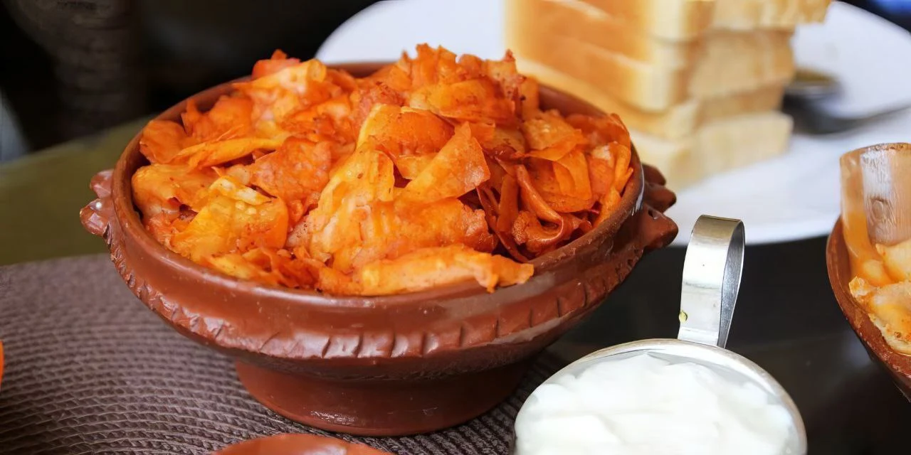

Chechebsa Recipe
Chechebsa is a popular Ethiopian dish made from pieces of flatbread sautéed in spiced clarified butter (niter kibbeh). It’s often served for breakfast, accompanied by yogurt or tea.
Ingredients:
Injera or flatbread (torn into pieces)
2-3 pieces
Niter kibbeh (spiced clarified butter)
4 tbsp
Berbere spice mix
2 tbsp
Salt
To taste
Cinnamon (optional)
1/2 tsp
Honey (optional)
1 tbsp
Instructions:
- Tear the injera or flatbread into small pieces and set aside.
- In a large pan, heat the niter kibbeh over medium heat.
- Add the berbere spice mix (and cinnamon if using) to the niter kibbeh and stir for a minute until fragrant.
- Add the torn pieces of flatbread to the pan and stir to coat with the spiced butter.
- Continue cooking for 5-7 minutes, letting the bread absorb the flavors and become slightly crispy.
- If desired, drizzle honey over the chechebsa and stir well to combine.
- Season with salt to taste, and serve warm with yogurt or tea.
Tips:
- For a sweeter version, you can add more honey.
- Chechebsa can be made with any type of flatbread, but injera is traditional.
- Adjust the level of berbere spice to your preference for spiciness.